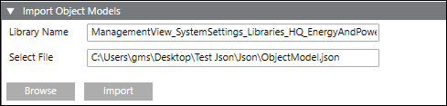

Import Object Models Expander
The Import Object Models expander allows you to import the System Browser data represented as object models in the JSON file to the specified library. After import, the object models are created in the Object Model folder of the selected library.

- Library Name - Drag-and-drop the library to which you want to add the object model.
- Select File - Browse and specify the JSON file with details of the object models to be added to the library.
- Import - Imports the object model data in the JSON file to the specified library.